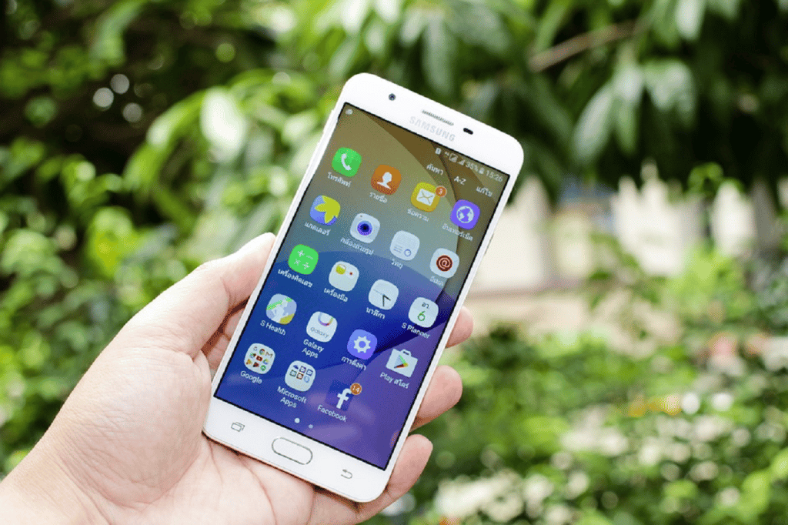
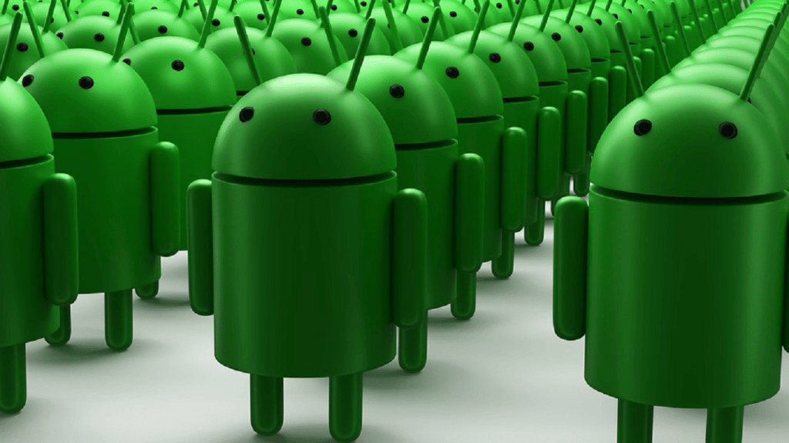

Android: Curiosidades Sobre o Sistema Operacional
iOS ou Android? Essa é uma pergunta que talvez irá durar um bom tempo, afinal de contas, os sistemas operacionais são concorrentes diretos. Se um lado temos o peso-pesado e superpotência global, iOS da Apple, do outro lado, o amplamente usado, personalizável, Android. Hoje separamos as melhores curiosidades sobre o Android e você pode conferir todas elas agora mesmo!
Desenvolvimento
Em 2004, o sistema operacional Android foi desenvolvido com o apoio do Google pela Android Inc. Em 2005, o Google pagou US$ 50 milhões pelo sistema operacional. Originalmente, o sistema operacional não foi projetado para o mercado de smartphones; na verdade, foi desenvolvido como uma plataforma de câmera digital.
Sobremesas
Todas as versões do Android, com exceção das versões 1.0 e 1.1, têm nomes de confeitos e sobremesas, como Jelly Bean, Ice Cream Sandwich e KitKat. As versões do sistema operacional são alfabéticas: Astro, Bender, Cupcake, Donut, Eclair, Froyo, Gingerbread, Honeycomb, Ice Cream Sandwich, Jelly Bean, KitKat, Lollypop e Marshmallow.
Smartphone
O primeiro smartphone rodando Android foi lançado em 2008, o HTC Dream ou T-Mobile G1 dependendo do seu país, tinha um teclado deslizante.
